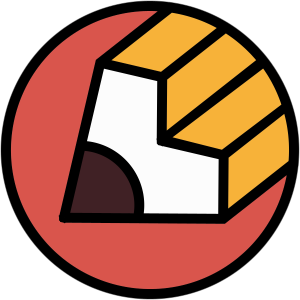

In my toolbox
HTML, CSS, Git

UX & prototyping
Endless curiosity
Other internet homes
- I publish and share code.
- I bookmark useful things.
- I try to listen to new music every day.
- I tweet sometimes, but rarely enjoy it.
I’m a pretty happy designer currently working at Action Verb.
I like dogs, national parks, and making useful things with talented people.